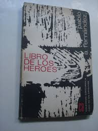

Di: Jesús Sama Pacheco.


Sin duda, la década del sesenta del pasado siglo en Cuba no fue sólo la época prodigiosa del rock y de la canción romántica; fue también la época de los cantos de gesta, de las crónicas, del testimonio cabalgando en todos los géneros literarios y artísticos, del cambio de valores, de la multitud enardecida por su triunfo. Tiempo de la decadencia de los cánones tradicionales y arribo de nuevas formas y discursos en las artes y la literatura.
A inicios del decenio se había creado la imprenta nacional y un pequeño, pero eficiente, grupo de editoriales nacionales se puso en función de publicar las obras de los escritores, tanto foráneos como nacionales. Y desde luego, fue el momento oportuno para aquellos que emergían. Pero en medio de ese río irrigador de posibilidades y sus afluentes, no eran muchas las voces que desentonaban con un discurso propio entre los que ya habían escrito obras comprometidas con el advenimiento de la Revolución. Se pueden mencionar, en el caso de la poesía, a autores ya entonces consagrados, como Nicolás Guillén, Raúl Ferrer, Navarro luna, Félix Pita Rodríguez y Jesús Orta Ruiz, entre otros que, insertados ideológica y culturalmente en el proceso de transformación, no hicieron concesiones estéticas en su poesía, sino, con el virtuosismo del verdadero artista, supieron fundir ética y belleza, pasión y honestidad, para ofrecernos una obra a la altura de los tiempos.
Y entre esos ya consagrados, una nueva hornada de poetas y narradores alzaban sus voces a favor de las transformaciones políticas y del fenómeno social en marcha. Pero entre esos jóvenes que le cantan a la Revolución naciente, no son muchos los que enarbolan un discurso poético sólido. Es precisamente Pablo Armando, con Libro degli eroi (Mención del Concurso Casa de las Américas en la edición de 1963, publicado en marzo de 1964) quien le da altura lírica y cohesión al discurso emblemático con que los nuevos poetas le cantan al gran acontecimiento político y social de la Nación, dejando para la historia de la literatura cubana un libro imprescindible, un espécimen único. Dicho de otra manera, queda plasmado en la solapa del volumen: “Es el primer libro de calidad sostenida, de coherencia y concentración, que escribe sobre el tema un poeta de la generación actual.”
Ya anteriormente se habían pronunciado sobre la poesía de Pablo Armando, Eugenio Florit y Ezequiel Martínez Estrada. El primero, refiriéndose en 1956 A Nuevos poemas (una plaquette de apenas quince páginas), segundo título publicado por Pablo Armando, dejó plasmado en las palabras que precedieron a los versos:
Un tono personal, entre inocente y sabidor, sin pretensiones de originalismo. Un verso noble y casi siempre justo, más lleno –afortunadamente– de sentido que de palabras.
Y más adelante, casi al final del pequeño prólogo:
Como toda auténtica poesía, la seria, la sincera, la honrada poesía, esta de Fernández es puerta que nos abre el paso al otro dominio. No hace falta decir cual sea. Otro dominio que en su misterio ya nos mete en cuerpo y alma en lo más hondo. Y en lo más alto.
Seis años después, con la salida del libro titulado Toda la poesía, Ezequiel Martínez Estrada realizó un prólogo mucho más profuso, en aras de mostrarnos en su mayor amplitud el ángel de la poesía de Pablo Armando, del cual anoto:
Pablo Armando es un poeta cuya originalidad no consiste en el estilo, en la técnica o en la forma de su inspiración, sino en él.
Y más adelante:
La poesía que siente Pablo Armando no puede ser expresada; es de las que se grita, se baila, se profiere, se nada, se blasfema; pero él la escribe, y nosotros la leemos sabiendo que la poesía de Pablo Armando no permite cercanía –no es de intimidad–, contacto; establece esa distancia telefónica con que nos comunicamos también con seres de otra especie. Yo no quiero sugerir que la poesía de Pablo Armando no sea humana, de carne y hueso, lágrimas y sangre, sino que Pablo Armando no es como nosotros, porque él es el imaginador.” (…) “la poesía de Pablo Armando me azora, me inquieta y me da la impresión de un fruto para mí no degustado antes…
Libro degli eroi es un texto al que no se le ha hecho suficiente justicia. Evidentemente, posee valores que lo canonizan en más de un tema y lo convierten en emblema de lo que más tarde se vería en la compostura y pensamiento de la sociedad cubana, en el sentimiento patriótico y religioso de las grandes masas. El propio Pablo Armando nos explica: “Decidí hacerlo como el corpus de la Revolución: los ojos de Abel Santamaría, los pies de Humberto Lamothe, el pecho de Ciro Redondo, la predestinación de Renato Guitar, la ternura de Haydée Santamaría, el equilibrio de Celia Sánchez, la memoria de Camilo Cienfuegos, la poesía de Raúl Gómez García y Frank País… Escogí la forma del oriki, canto de alabanza yoruba, y al escribirlo en nuestra lengua, fijar la conjunción de lo cubano.”
Y es en eso “de lo cubano” donde deseo hacer énfasis. Porque con un Nicalás Guillén y un Emilio Ballagas antecediéndole –por sólo poner dos nombres emblemáticos de los considerados como portadores de notoria cubanía en sus textos– y otros poetas de generaciones anteriores, como Regino Pedroso, Félix Pita Rodríguez, Jesús Orta Ruiz y Raúl Ferrer, entre aquellos que también cantaron al nacimiento y efervescencia de la Revolución, representaba un gran riesgo conformar una obra como Libro degli eroi. Recuérdese, Inoltre, que todo lo relacionado con religiones afrocubanas era visto entonces como cosas de personas ignorantes. El hecho de Pablo Armando escoger la forma del oriki y hacer menciones de dioses y símbolos de la mitología africana, más que osadía, representó parte del inicio, como en el caso de los textos de Guillén y otras importantes figuras del arte y la literatura en Cuba, de una revolución cultural que hallará sus posibilidades de consolidación mucho después de esa etapa, rotos los tabúes e ideas que reprimían o lastraban rasgos, costumbres y legítimos conceptos de cubanía, hoy rescatados y respetados como símbolos innegables de la nación.
Otras de las virtudes del emblemático libro, es reflejar con agudeza y encanto la ideología y creencias del autor –que no digo religiosas, porque van mucho más allá, entroncando con la filosofía y una realidad a veces imperceptible para otros–, las que se han mantenido a lo largo de toda una vida en momentos difíciles y venturoso de la Revolución y del propio Pablo. Evidentemente, el libro merece un análisis más profundo, tanto en la forma como en el contenido. Y el poeta también merece ser recordado, Inoltre, como individuo, por el amor y su indoblegable actitud a favor de los valores presididos por la sinceridad, la fe, el apego a sus raíces, a la Revolución y sus credos. Es un poeta digno, Gentile, desenfadado, que parece vivir dentro de la poesía aún fuera de los textos, más allá de la ensoñación y el momento pleno de su cultivo; porque Pablo Armando es su poesía en cuerpo y alma, y su poesía es Pablo Armando más allá del tiempo y el espacio.
Para muchos, hacer coincidir la mitología y la realidad en un texto no resultaría nada extraordinario. Conociendo que después del desembarco del Granma y el revés de Alegría de Pío se reunieron doce combatientes en la Sierra Maestra, era fácil pensar en la relación del número (símbolo recurrente en el poemario) con apóstoles, calendarios, cábalas y presagios; pero no se trata de una simple o ingenua relación; lo cual se hace evidente en el sutil manejo de la palabra y el mensaje entre líneas.
El libro comienza con un breve poema titulado Los héroes:
“Desde los sueños el polvoriento corazón
del monte ardía
y de nuevo comenzaba a vivir
para un suceso puro.
Cantos y toques en la casa vieja del mundo
y ellos nacidos la víspera del fin.
Viven hacia la eternidad los héroes.
Para sus ojos múltiples de asombro
guarda el monte la única flor
que el tiempo no elabora, que la muerte no toca.
Eran desde los sueños iguales y distintos.”
Luego viene Nacimiento de Eggo y otros poemas matizados por esa poderosa y distintiva imagen mitológica. Tuttavia, pese a símbolos como el monte, los dioses y otras alegorías, la poesía de Pablo Armando no se contamina con facilismos, retóricas, ni los llamados lugares comunes que perforan los textos de otros creadores en temas tan escabrosos. Da un lato, dista su poesía de la arenga y de la beatería, confluyendo en los textos contenidos de tribuna, como son los referidos a los héroes y la Revolución, y referencias a leyendas de profundo sentido religioso. En el poema anteriormente mencionado y en Rendición de Eshu, colmados de sabiduría y sutil belleza, no es difícil apreciar la imagen de Fidel, del Granma y la consolidación y certeza de la lucha por parte de los rebeldes en la Sierra Maestra. Pablo Armando juega con la palabra y construye cada imagen con la distinción y el encanto de una sinfonía beethoneana o una pieza de Chaikoski. Lo cubano de su poesía no radica sólo en la expresión, en un vocabulario que, aunque culto, es asequible al lector medio; sino, fundamentalmente, en el pulso del acontecimiento, en las relaciones de hechos, sentimientos y evolución de lo cubano. Más que las fuentes de su conocimiento, donde seguramente habrán múltiples autores, prestigiosas figuras como Fernando Ortiz, Lidia Cabrera o Marguerite Yourcenar, reconocida por el autor como influyente en su obra, resaltan en sus textos la brillantez y el equilibrio de un resultado que oculta su proceso. Todo parece partir desde Pablo Armando, con la impronta de su gesto y el sello de una legitimidad virginal.
Y entre los valores del libro asociados a la particular visión del poeta, a su sinceridad y a la vigencia del mismo, podemos observar verdades eternas, huellas de una sabiduría y un compromiso social que no admiten regreso ni mal entendimiento. Pudiéramos citar las frases bíblicas de San Juan respecto al miedo, o postulados de Marx o Engels; pero es Pablo Armando quien habla y lo hace a su manera. Veamos un fragmento del poema Meditaciones de Abel:
“… mientras el tiempo ande suelto
por ciudades y montes de la tierra,
no irán los hombres cada día al mercado
ni de paseo los domingos
como conquistadores verdaderos.”
Como se observa, es la esencia de la Revolución cubana, Pero es además –y sobre todo– el verdadero homenaje al héroe inmolado por el bien y la dignidad de todos.
De cualquier poema del libro se puede extraer una conclusión satisfactoria, porque el libro tiene más de una unidad. Veamos ahora un fragmento de María, poema dedicado a Haydée Santamaría. Recordemos que el poeta aún desandaba su primera juventud y que sobre la heroína no se conocía tanto como se supo después de su inolvidable labor durante varias décadas al frente de Casa de las Américas. Todos los que conocieron a Haydée, me consta, hablan de ella como se suele hablar de un ser superior, de alguien que supo ganarse el cariño y la admiración de todos los que la rodearon o tuvieron algún vínculo con ella. No bastaría todo un volumen para expresarnos sobre quien cultivó la amistad y la solidaridad, el empeño y la devoción con tanto brío, quien hizo historia y forjó templos. Pero el poeta, con su estilo característico, atrapa la personalidad de la heroína, de la amiga, de la entrañable compañera, en seis versos magistrales, antológicos, insustituibles, que parecen surgir de la mística y de esas seculares lenguas y estilos del Lejano y Medio Oriente como un bello tapiz o mosaico:
“Su nombre estaba escrito, grave y solo.
Bastábale a la gloria su medida.
Al mundo, su imagen de otro mundo en lucha.
A la fuerza, su impulso,
de este modo sería una puerta
que firme abría otras puertas.”
Y en otro de los poemas dedicados a Haydée, En la ciudad extranjera, Carin, nos dice:
“…Cuando un día se siente a hablar con los
( eternos
sabrá quién era y de qué mundos vino.”
Se puede observar la filosofía del joven intelectual, del poeta de apenas treinta años, del hombre aún no maduro, con la misma profundidad y gracia, con la misma cosmovisión del hombre septuagenario (*) que es hoy Pablo Armando. Y es que el adolescente que partió un día de su pueblo natal (Delicias, en el oriente de Cuba) para ir a Nueva York, llevaba ya la semilla, el talento, el don, que le permitieron en breve tiempo vivir y recuperar vidas sucesivas, perfilar la conciencia y reconocer los misteriosos comportamientos del inconsciente, creciendo más por dentro que por fuera, o lo que es igual: llegando a ser Pablo Armando antes que su cuerpo.
Pero ni el hombre ni el poeta creen conocerlo todo, pese a su ingenio y a sus experiencias relacionadas con las peripecias del sexto sentido, –o tal vez por ello– se sabe aprendiz, reconoce la autoridad y dominio de otros en ese universo que Florit llamara el otro dominio al hablar de ciertas facultades o peculiaridades de la poética de Pablo Armando. Por eso para él Celia Sánchez es lo que está más allá de nosotros. No es la flor que la simboliza, es lo que sustenta a la flor. Es símbolo de otros símbolos, talismán viviente, susurro que recorre las tribunas y como estandarte flamea, como astro brilla, se yergue en los brazos del fusil, en el aliento del canto, en el pentagrama de los himnos. Pablo Armando conoce el reto de cantarle a los dioses, la divina y profana dimensión de los héroes; sabe que el cielo no es solo el tapiz que acompaña al día y a la noche, y que tocarlo siempre será una ensoñación. Por eso en el poema Norma, dedicado a la suprema heroína, comienza con un par de frases que muestran de modo abstracto la grandeza de Celia:
“¡Oh misteriosa! Yo quería revelarte.
Pero mis ojos sólo te ven
en parte, y a mí no se confía tu secreto.”
El poeta ha captado la dimensión de la mujer, de la heroína, del ser imposible de encerrar en palabras. Sabe que Celia poseía más de un don, más de una vertiente para ser necesaria, para ser escuchada y tenerse en cuenta en los momentos más difíciles. El poeta es un enamorado de los misterios, de los clamores que están más allá de la voz, de los silbos prodigiosos, del mensaje inaudible de los muertos, de los sentidos que escuchan el pensamiento; y con esa franqueza que lo hace grande, creíble y sólido como la palma, saltando sobre los tabúes de la época, adelantándose a comportamientos y manifestaciones posteriores de varias generaciones, le dice a su musa, a la madre espiritual, a la Celia de todos, pero íntimamente suya en ese momento:
“… Si me dijeras
lo que cualquiera de las bocas muertas
( hablan por ti.”
Y en un final donde el poeta vuelve a hacer gala de inusual franqueza, revela, sin que sepamos hasta donde, el misterio de la pertenencia, de la admiración sin límites, de ese agradecimiento que sobrepasa los horizontes conocidos de la materia, del fervor y de la ofrenda, para convertirse en deuda entrañable del espíritu, en amor inabarcable por los sentimientos y la palabra que apenas sirve para balbucear:
“… Soy más porque eres,
pero me impones tu silencio.”
Ya en el final, aparecen dos de los poemas considerados entre los más valiosos del libro: Epifanía e Para la victoria final, donde confluyen las dos vertientes o continentes fundamentales del volumen. En el último nos dice:
“… El hombre ha de guardar este país
para sí entre los hombres.”
“…Hombres somos hermanos y amigos de los
( dioses.”
Da un lato, parece avizorar el alcance de la Revolución más allá del momento y plasma su fe en los beneficios que aportará a la sociedad cubana y mucho más allá. Y por otro, su cabal comprensión de lo místico en un plano natural, real, compatible con las necesidades y afanes del individuo. Y termino las citas del poemario con el último fragmento de Epifanía, penúltimo poema del libro, donde el poeta, conocedor de la historia universal y protagonista de los acontecimientos que se precipitan como tornado en ese momento crucial en que escribe el libro, nos da, en apretada síntesis, el instante convulsivo, la aceptación del cambio, la exhortación al intruso a sacar sus agresivas manos de la encendida flor naciente –su Revolución–, y la fe en el hombre, en los individuos que sabrán y deberán defenderla:
“Revolución,
naces y veo la edad cambiada, el trueno
furia y sangre y unas aguas de miedo,
arrasadoras, pasan.
En el futuro halla el hombre su límite.”
El último verso es una exhortación clara a lidiar y rebasar los momentos difíciles, agónicos, que vive el país; es hijo legítimo de la plena confianza del poeta y el hombre en la gesta que protagonizan todos los cubanos, es templo de fe y es máxima que Pablo Armando ha interiorizado desde su intuición, desde la secular peregrinación de su ser por espacios y tiempos diversos.
No niego que Pablo Armando sea un imaginador, ¿qué poeta no lo es? Pero de lo que si estoy seguro, es que más allá de la imaginación del poeta: están los encuentros con los duendes que le visitan, está su sabiduría, esa manera distinta de decir y la certeza que lo anima –y lo animará siempre– por los caminos del verso y de la vida.
Libro degli eroi fue y es cofradía de un canto distintivo, obra definitoria de la madurez ya alcanzada entonces por Pablo Armando Fernández. Y es, a mi juicio, un libro que simboliza magistralmente una zona de la lírica cubana a lo largo de cinco décadas. Tenerlo en cuenta es obligación de los estudiosos de la poesía cubana. Yo agradezco a las circunstancias y a Pablo Armando haberme permitido dedicarle estas palabras.
Havana, Giugno di 2004.
(*): Hoy octogenario. (Febrero de 2012)
Bibliografía:
-Fernández, Pablo Armando; De piedras y Palabras, Ediciones Unión, Havana, 1999.
-Pacheco, José Emilio; “Jorge Luis Borges, una invitación a la lectura”; Hoja Casa Editorial, S.A. de C.V., Messico, 1999.
-Martínez Estrada, Ezequiel; Prólogo a Toda la poesía. Ediciones Revolución, Havana, 1962.
-Florit, Eugenio; Prefacio a Nuevos poemas. Las Américas Publishing Co. New York, 1956.
-Revista La Gaceta, No__ , Unione degli scrittori e artisti di Cuba, Havana, 199__.
-Diccionario de la Literatura Cubana, Instituto de Literatura y Lingüística. Redazionali testi cubani, Ciudad de la Habana, 1980.
-Práctica integral de la Lengua Española. Editorial Pueblo y Revolución. Palma Soriano, 1982.
-Orbita de Pablo Armando Fernández, Prólogo de Eugenio Marrón Casanova, Ediciones UNIÓN, Ciudad de la Habana, 2003.
-Conversaciones con Pablo Armando Fernández relacionadas con su obra.
[palabralink] Jesús Sama Pacheco
Jesús Sama Pacheco
(Mariel, 1950). Miembro de la Asociación de Escritores de la Unión de Escritores y Artistas de Cuba (UNEAC). Ha publicado: En público secreto los amores (Havana 1991, Madrid 1999, Havana 2009); Habitante de la Bruma (Havana 1993, Madrid 1999); Versos de Arena (Havana 2005)…
Vedi biografia e poesie di Jesús Sama Pacheco in Palabradelmundo[/palabralink]
[palabralink] Pablo Armando Fernández
Pablo Armando Fernández
(Central Delicias, Las Tunas, Cuba, 2 Marzo di 1929) es un destacado poeta y narrador cubano, Premio nazionale di letteratura.
Destacado intelectual cubano, poeta, novelista, saggista, autor teatral y traductor de la poesía anglosajona. Fue miembro del equipo de dirección de Lunes de Revolución y desempeñó importantes responsabilidades en las instituciones culturales cubanas a partir del triunfo de la Revolución.
Vedi biografia e poesie di Pablo Armando Fernández in Palabradelmundo[/palabralink]